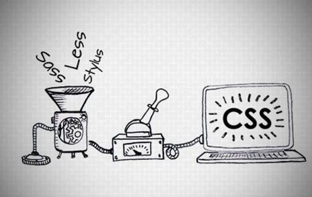

O que são pré-processadores?
Pré-processadores são interpretadores de código, onde uma sintaxe é convertida para outra sintaxe (SCSS para CSS, por exemplo).

- É possível usar recursos que ainda não exisem no CSS (variáveis, nesting, mixins, herança e etc
- Facilitam a manutenção do código, fazendo um código mais limpo.
- Faz os códigos CSS mais flexíveis e reutilizáveis.
- Ajuda a evitar a duplicação de código.